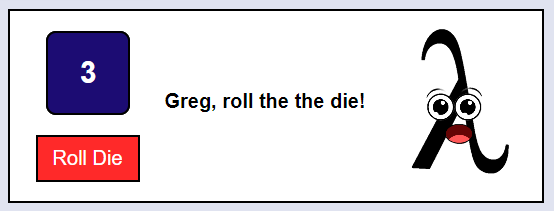
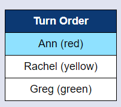
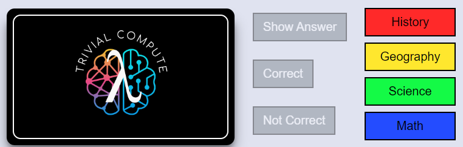

Click the "Show/Hide Instructions" button at the top of the screen to close this window.
Welcome to Trivial Compute! This is a digital board game that will help you learn while also having fun!
The goal of the game is to move around the game board and collect "colors" by answering trivia questions in each of the four categories. To win, you must return to the center square of the game board and answer a final question correctly.
Lambda will tell you what to do on your turn! This window also has the die. Click the "Roll Die" button when Lambda tells you to roll the die.
This table shows all the players' names and token colors. If your name is highlighted blue, it's your turn!
When you are asked a question, the trivia card window will go up and show you a question. To show the answer, click the "Show Answer" button. Click "Correct" or "Not Correct" to let Lambda know if you got the answer right.
If you land on the Center Square, you or your opponents should click one of the four Category Buttons to select a category.
The buttons will be greyed out to let you know that it's not time to click them, and they will be colorful when you can click them!
At the start of the game, your tokens will start on the center square.
Once you have earned all four colors, go to the Center Square of the game board. You must land exactly on this square. When you do, your opponents will choose a category for you to answer. They will click the corresponding Category Button. If you answer the question correctly, you win! If you do not answer it correctly, then you must move out of the Center Square on your next turn, then try again to land on the Center Square to get another chance to win.